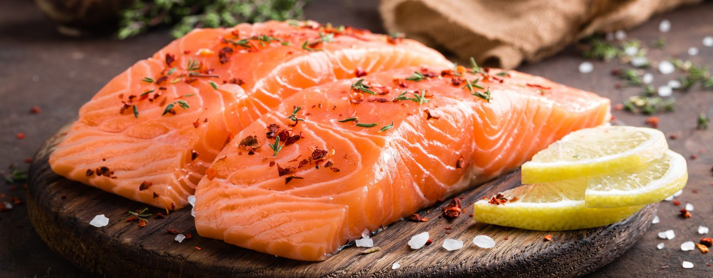

<h1>Laks</h1>

<h2>Deilig tilberedt laks</h2>
<p>Slik gjø du det bl avl bjkfhovhe</p>
<p>og så må su mkehefkenfrghref</p>
<h3>Ingredienser</h3>
<ul>
    <li>smør</li>
    <li>sitron</li>
    <li>laks</li>
</ul>
<h3>Steg</h3>
<ol>
    <li>gjør ditt</li>
    <li>gjør datt</li>
    <li>så er du good</li>
</ol>